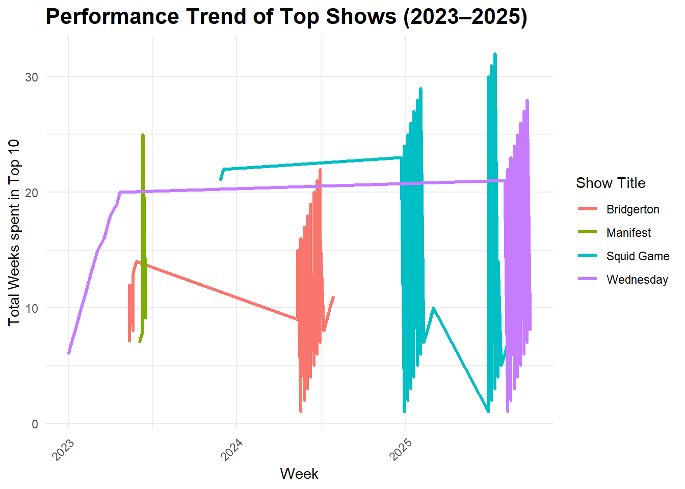
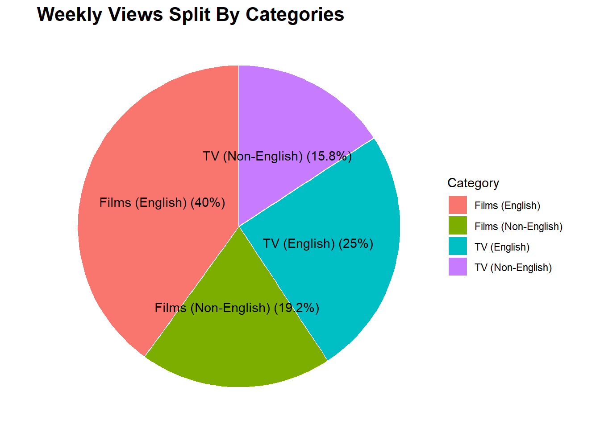

Mini Project #01: Gourmet Cheeseburgers Across the Globe
Exploring the Most Popular Programming on Netflix
Author
Rashika Auti
PUBLISHED ON: 2025-10-03
Executive Summary
This project analyzes Netflix’s TuDum Top 10 data to uncover global streaming trends and audience preferences. By examining weekly rankings, viewership hours, and cumulative performance across countries, the analysis identifies the most popular films and TV shows, highlights non-English successes, and evaluates the longevity and multinational appeal of top content. Insights from this project provide a data-driven view of what captivates viewers worldwide and how global hits compare across categories and regions.
Tracking Netflix’s biggest hits to decode viewer favorites
Netflix’s Top 10 charts reveal what viewers around the world are watching and loving. By analyzing the biggest hits across countries and categories, we can uncover patterns in audience preferences, trending genres, and global fan favorites. This insight helps decode what keeps the world glued to their screens.
Acquire data from the website
Data was acquired from Netflix’s TuDum Top 10 website, capturing weekly rankings and viewership of the most popular shows and films globally and by country.
The downloaded TSV files from Netflix’s TuDum Top 10 were imported into R for analysis, enabling exploration and manipulation of weekly rankings, viewership, and other key metrics.
COUNTRY_TOP_10 <-read_tsv(COUNTRY_TOP_10_FILENAME, na =c("","N/A")) # refer https://readr.tidyverse.org/reference/read_delim.html
Initial Data Exploration
This step involves preparing the data for analysis by cleaning and transforming it. Key tasks include formatting column names, identifying unique values, and converting units to make the dataset structured, consistent, and easier to work with. #### Leveraging the DT Package for Enhanced Table Readability
View R Code
if(!require("DT")) install.packages("DT") # installing DT packagelibrary(DT)GLOBAL_TOP_10 |>head(n=20) |># display first 20 records onlydatatable(options=list(searching=FALSE, info=FALSE)) #datatable() function is used to convert these 20 records into an interactive table (better styling with ability to scroll and sort the data)
View R Code
COUNTRY_TOP_10 |>head(n=20) |># display first 20 records onlydatatable(options=list(searching=FALSE, info=FALSE))
Formatting tables for clean column names and formatted number
View R Code
library(stringr)format_titles <-function(df){colnames(df) <-str_replace_all(colnames(df), "_", " ") |>str_to_title() # converting column names to Title Case df}GLOBAL_TOP_10 |>format_titles() |>head(n=20) |>datatable(options=list(searching=FALSE, info=FALSE)) |>formatRound(c('Weekly Hours Viewed', 'Weekly Views')) # formatting large numbers with comma separation and rounding
In this phase, we analyze the cleaned dataset to uncover patterns, trends, and insights. We summarize key metrics, identify top-performing shows and films, and answer specific questions about global and country-level viewership.
Answering Key Questions from Cleaned Data
Q1. How many different countries does Netflix operate in? (You can use the viewing history as a proxy for countries in which Netflix operates.)
Ans. Netflix operates in 94 countries based on the top 10 viewing data.
Q2. Which non-English-language film has spent the most cumulative weeks in the global top 10? How many weeks did it spend?
Ans. All Quiet on the Western Front is the non-English film that spent the most cumulative weeks in the global top 10. It spent about 23 weeks in global top 10.
Q3. What is the longest film (English or non-English) to have ever appeared in the Netflix global Top 10? How long is it in minutes?
Ans. Pushpa 2: The Rule (Reloaded Version) is the longest film (English or Non-English category) to have appeared in the Netflix global Top 10. It is 224 minutes long.
Q6. Netflix provides over 200 weeks of service history for all but one country in our data set. Which country is this and when did Netflix cease operations in that country?
Ans. Netflix provided over 200 weeks of service history for nearly all countries, except Russia where operations appear to have ended around 2022-02-27 with merely 35 weeks of service.
Q7. What is the total viewership of the TV show Squid Game? Note that there are three seasons total and we are looking for the total number of hours watched across all seasons.
Ans. Across its three seasons, Squid Game has captivated the world with a combined viewership of 5,310,000,000 hours.
View R Code
squid_game_table <- GLOBAL_TOP_10 |>filter(str_detect(show_title, "Squid Game")) |># we use str_detect and not simple filter, to include all records where we have Squid Game under show_titlegroup_by(show_title, season_title) |>summarize(total_hours_viewed =sum(weekly_hours_viewed, na.rm =TRUE)) |>select(show_title, season_title, total_hours_viewed)squid_game_table <- squid_game_table |>bind_rows(tibble(show_title ="Squid Game",season_title ="Grand Total",total_hours_viewed =sum(squid_game_table$total_hours_viewed, na.rm =TRUE) ) )squid_game_table |>format_titles() |>datatable(options =list(searching =FALSE, info =FALSE)) |>formatRound('Total Hours Viewed', digits =0)
Q8. The movie Red Notice has a runtime of 1 hour and 58 minutes. Approximately how many views did it receive in 2021? Note that Netflix does not provide the weekly_views values that far back in the past, but you can compute it yourself using the total view time and the runtime.
View R Code
# runtime = 1 hour 58 min (given), total view time can be computed by summarizing the data# later, computing weekly views as the ratio of total view time and runtimered_notice_in_2021 <- GLOBAL_TOP_10 |>filter(show_title =="Red Notice", year(week) ==2021) |>summarize(total_hours_viewed_2021 =sum(weekly_hours_viewed, na.rm =TRUE))given_runtime <- (1+58/60) # converting 1hr 58 min in hoursapprox_weekly_views <-format(red_notice_in_2021 / given_runtime, big.mark =",")approx_weekly_views
total_hours_viewed_2021
1 201,732,203
Ans. Red Notice gathered approximately 201,732,203 views in 2021, based on its 1 hour 58 minute runtime.
Q9. How many Films reached Number 1 in the US but did not originally debut there? That is, find films that first appeared on the Top 10 chart at, e.g., Number 4 but then became more popular and eventually hit Number 1? What is the most recent film to pull this off?
View R Code
# Filter data for USA and films categoryusa_films <- COUNTRY_TOP_10 %>%filter(country_name =="United States", category =="Films")# Check if a film reach no.1 and get a debut rankusa_films_check <- usa_films |>group_by(show_title) |>arrange(week) |>mutate(debut_number =any(weekly_rank ==1),debut_rank =first(weekly_rank) ) |>filter(debut_number ==TRUE, debut_rank >1) |>ungroup() |>distinct(show_title) |>nrow()#usa_films_checkrecent_film <- usa_films |>group_by(show_title) |>arrange(week) |>mutate(debut_number =any(weekly_rank ==1),debut_rank =first(weekly_rank),latest_week =max(week) ) |>filter(debut_number ==TRUE, debut_rank >1) |>ungroup() |>arrange(desc(latest_week)) |>slice(1)#recent_film
Ans. A total of 45 films climbed to Number 1 in the US without debuting at the top, with the most recent one to achieve this milestone being KPop Demon Hunters.
Q10. Which TV show/season hit the top 10 in the most countries in its debut week? In how many countries did it chart?
Ans. Emily in Paris made a spectacular global entrance, hitting the Top 10 in 94 countries during its debut week.
View R Code
COUNTRY_TOP_10 |>filter(str_detect(category, "TV")) |>group_by(show_title) |>filter(week ==min(week)) |># to filter data by 1st debut weeksummarise(count_of_countries =n_distinct(country_name)) |>arrange(desc(count_of_countries)) |>head(n=20) |># show top 20 such TV showsformat_titles() |>datatable(options=list(searching=FALSE, info=FALSE))
Press Releases
Discover what’s capturing the world’s attention on Netflix! This series showcases press releases that dive into the hottest films and series across countries and languages, revealing global viewing trends and highlighting the standout hits dominating Netflix’s Top 10.
Stranger Things Season 5: The Global Phenomenon Comes to a Thrilling Finale
Netflix is thrilled to announce that the fifth and final season of Stranger Things will premiere at the end of 2025. Since its debut, the series has captivated audiences worldwide with its blend of suspense, nostalgia, and unforgettable characters. Each season has consistently dominated Netflix’s Top 10 charts across multiple countries, sparking cultural conversations and fan engagement on an unprecedented scale. As anticipation builds for the finale, viewers can expect a thrilling conclusion that lives up to the global phenomenon the show has become.
Since its debut, Stranger Things has become a cultural phenomenon. Across its previous four seasons. Let’s take a closer look at the key facts and figures surrounding the show to date.
Total Viewership: The show has amassed an astonishing 2,967.98 million hours of viewing globally.
Prolonged presence: Each season has consistently stayed in the Top 10 for 19 weeks, highlighting enduring audience engagement.
Global Fanbase: Stranger Things has charted in the Top 10 across 93 countries, captivating fans from the Americas to Asia.
Most-Watched Sensation: Stranger Things ranks as the second most-watched English-language TV series on Netflix, amassing an impressive 2,967,980,000 hours viewed globally, proving its enduring appeal across the globe.
Surpassing other fan-favorites like Bridgerton and Ginny & Georgia, Stranger Things continues to captivate audiences, and with Season 5 approaching, fans can expect more thrilling twists and unforgettable moments from this iconic series.
Bollywood Meets Binge: Netflix Captures India’s Streaming Hearts
Netflix is celebrating record-breaking success with its Hindi-language films and TV shows in India. From epic Bollywood blockbusters to binge-worthy series, audiences across the country are engaging like never before. Recent viewership trends highlight the platform’s strong local appeal and long-term growth potential.
Let’s dive into the numbers behind Netflix’s India success.
Content Variety: Netflix has 10 Hindi-language titles consistently in the Top 10.
Sustained Popularity: The top Indian programs maintain an average weekly rank of 5.3, showing strong and consistent engagement.
Longevity: These titles collectively spent 6098 weeks in the Top 10, proving lasting audience interest.
Chart-Toppers:214 Hindi-language titles reached the #1 spot on Netflix India’s Top 10, highlighting their unrivaled popularity.
Longer Engagement: Indian content stays in the Top 10 for an average of 4.37 weeks, outperforming the global average of 3.38 weeks, highlighting sustained viewer interest and dominance in the global market.
India is taking Netflix by storm! With homegrown films and series consistently topping the charts and captivating viewers longer than anywhere else in the world, the country is shaping the future of streaming and redefining global entertainment trends.
Worldwide Buzz: Non-English Films Capture Global Audiences
With non-English films taking center stage, Netflix is commemorating a revolutionary change in the global entertainment industry. Non-English films are not only attracting enormous audiences, but they are also remaining in the charts for longer than their English-language counterparts, according to Netflix’s Global Top 10 data.
From Hindi blockbusters to Korean thrillers and Spanish dramas, this trend demonstrates the growing need for diverse narrative on a worldwide scale and demonstrates how potent cinema is a language-neutral medium.
The below findings reveal a major shift in global viewing habits; showing that investing in non-English content can unlock new audiences, boost engagement, and drive growth worldwide.
Longest-Running Non-English Film:All Quiet on the Western Front spent an impressive 276 weeks in the Global Top 10, outperforming most English-language films in staying power.
Record-Breaking Reach: The film (All Quiet on the Western Front) reached the #1 spot in 11 different countries, including markets far beyond its country of origin.
Global Footprint: These 10 films collectively reached the #1 spot in 94 countries, showcasing their power to cross borders and cultures.
Depth of Engagement: Even the 10th-ranked film remained for 66 weeks, outperforming many English-language releases.
From Seoul to São Paulo, viewers are proving that cinema has no borders. Non-English films aren’t just succeeding but they’re dominating, as audiences everywhere dive into fresh stories, cultures, and voices like never before. And this wave is only gaining momentum.
With demand skyrocketing, Netflix is supercharging investments in local film industries around the world ensuring the next global blockbuster could come from anywhere. The rise of non-English hits proves global audiences crave diverse stories offering huge opportunities for content, engagement, and growth across markets.
Extra Highlights

The line chart here tracks the total weeks each show spent in Netflix’s Top 10 globally. Wednesday shows a strong and steady presence, maintaining over 20 weeks throughout the period. Squid Game exhibits periodic spikes, reflecting renewed viewership surges, while Bridgerton and Manifest show shorter, more concentrated Top 10 runs. Overall, the chart highlights how certain series maintain prolonged engagement, whereas others achieve rapid but brief peaks, offering insights into viewer retention and binge patterns over time.

The pie chart above shows global Netflix viewership: English films lead at 40%, followed by English TV shows at 25%. Non-English films and TV account for 19.2% and 15.8%, reflecting growing international demand. While English content dominates, non-English programming is steadily capturing a significant share of global attention.